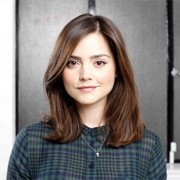

Clara Oswald
Portrayed by Jenna-Louise Coleman.
Clara Oswald is a fictional character portrayed by Jenna-Louise Coleman in the long-running British science fiction television series Doctor Who. First appearing in the show's seventh series, Clara is introduced as a companion of the eleventh incarnation of the alien time traveller known as the Doctor (portrayed by Matt Smith).
Over the course of 2012 and 2013, Clara is presented to the audience as three distinct, though similarly named, people. The first two incarnations each die during the episode in which they appear, while the third becomes the Doctor's companion. While distinct, the characters are all played by Coleman and are apparently meant to be regarded as the same person, thus setting up a mystery to be resolved. Despite appearing as Oswin Oswald in the seventh series premiere, Coleman did not take over from Karen Gillan as the show's female lead until the mid-series Christmas special, this time portraying Victorian governess and barmaid Clara Oswin Oswald. At the end of that episode, Coleman is seen playing a third version of the character, this time from contemporary London and named simply Clara Oswald. From the following episode, this Clara travels as the Doctor's full-time companion. For the remainder of the seventh series, the Doctor tries to uncover the mystery surrounding Clara's identity.
Coleman has confirmed that she is due to appear in the eighth series,[1] which is scheduled to begin filming in December 2013.[citation needed] Following the regeneration in the 2013 Christmas special, Clara will appear alongside the Twelfth Doctor, played by Peter Capaldi.[2]